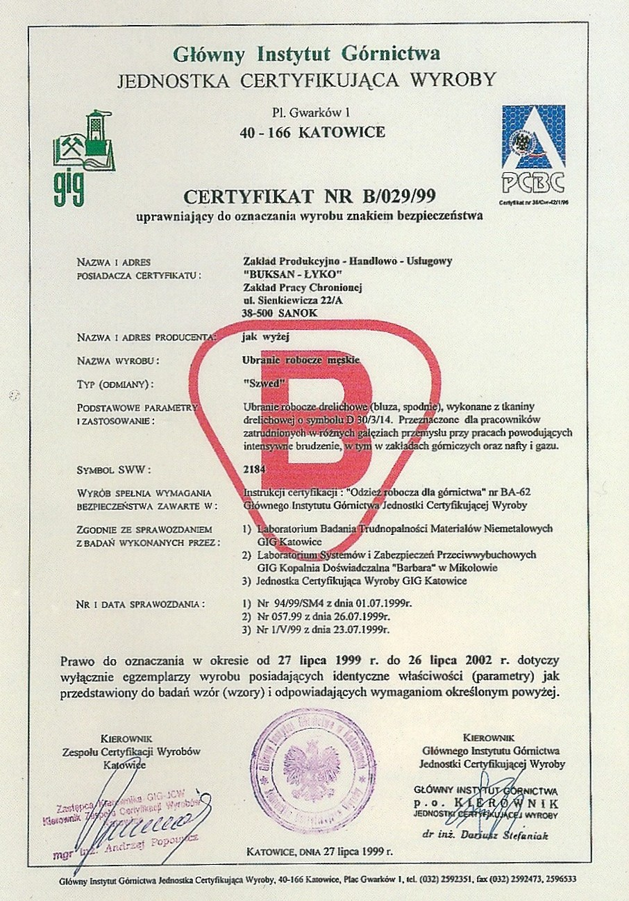
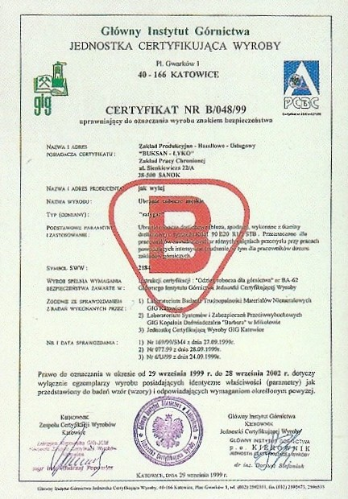
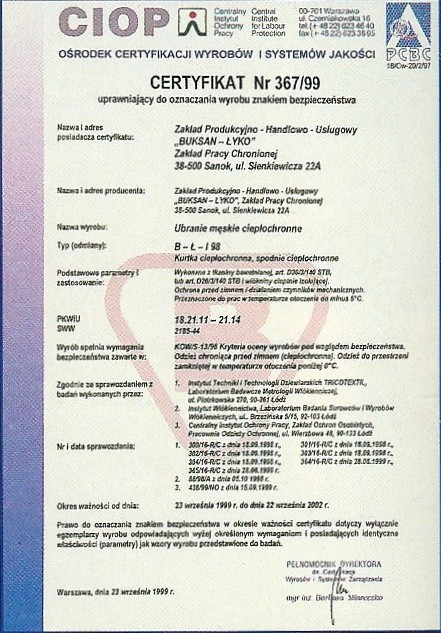

BUKSAN ŁYKO Zakład Produkcyjno-Handlowo-Usługowy Zakład Pracy ChronionejZPUH "Buksan-Łyko" w Sanoku, ul.Sienkiewicza 22A działalność rozpoczął w czerwcu 1993r. jako ZPHU "Buksan" Spółka Cywilna-głównie w zakresie produkcji odzieży służbowej, roboczej i ochronnej. W wyniku przekształceń od 30 grudnia 1996r. zakład prowadzi działalność pod obecną nazwą. Z dnie 1 stycznia 1997r. uzyskał Status Zakładu Pracy Chronionej. Ponad 30 letni staż pracy właściciela inż. Tadeusza Łyko w produkcji branży odzieżowej oraz wysokie kwalifikacje zatrudnionej załogi świadczą o wysokim standardzie konfekcjonowanych wyrobów. Różnorodność tkanin, fasonów w poszczególnych asortymentach gwarantuje spełnienie oczekiwań klientów. Większość asortymentów produkowanych przez zakład posiada certyfikaty i atesty dopuszczające do pracy na stanowiskach o szczególnym zagrożeniu. Całość produkowanej odzieży konfekcjonowana jest w oparciu o dokumentacje techniczno-technologiczne opracowywane przez Instytut Technik i Technologii "TRICOTEXTIL" w Łodzi, co zapewnia gwarancje należytej konstrukcji produkowanych wyrobów. Zaopatrywanie w odzież renomowane zakłady na terenie całego kraju potwierdza solidność zakładu. Nawiązanie współpracy z nami gwarantuje solidną obsługę i zadowolenie odbiorcy. Certyfikaty:Główny Instytut Górnictwa - B/029/99 Główny Instytut Górnictwa - B/048/99 Ośrodek Certyfikacji Wyrobów i Systemów Jakości - 367/99 |
|
|   | |
|  | |